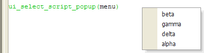

UI_SELECT_SCRIPT_POPUP()
Syntax
Menu_Selection as C = UI_SELECT_SCRIPT_POPUP( Menu_Entries as C [, Menu Style as C ] )
Argument | Description |
Menu_Selection | The selected menu entry. |
Menu_Entries | One or more scripts in a CR-LF delimited list. |
Menu Style | Not used. |
Description
The UI_SELECT_SCRIPT_POPUP() function displays one or more script names as menu selections. If the user selects a script from the pop-up menu, the script is executed.

Limitations
Desktop applications only.
Example
dim menu as C menu = <<%str% alpha beta gamma delta %str% ? ui_select_script_popup(menu) = "gamma" |
See Also
((User Interaction _UI_ Functions|User Interaction (UI) Functions)), Script Functions, Menu Functions